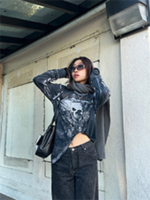

I don't frequently read books but I have a great appreciation for them. In my free time, I love going to bookstores to stare at them. It feels like I`m in the presence of stories. Endless stories and that I`m just another addition. There are some books that hold deep meaning for me. Growing up, I was obsessed with fantasy and dystopian novels. These books were something my sister and I could relate to and also greatly influenced my creativity. When I look back at these novels, it reminds me of a very joyous part of my childhood and I could still fangirl about them today. A recent favorite novel of mine has been Shadow and Bone.
Painting has always been a big part of my life. I first started painting when I was three years old. I would do art projects with my sister and I fell in love with the medium. I later started attending an art school where I furthered my technical skills and found the most appreciation for acrylic paint. My first ever job was working at that art school and teaching little kids the same techniques I learned. To this day, the outlet that brings me the most peace and relief is painting.

Shoes not only represent my love for fashion but also for dance. Clothes have always been a way for me to feel confident, invest in a hobby, and express my creativity. I also grew up dancing. Early in life, I took ballet, jazz, tap and hip-hop classes, but I later only pursued hip-hop in dance teams and occasional lessons. Whenever I listen to music, I express it through my body. I`m known as the dancey one in my friend group because I`m always moving and grooving to music.
My first ever tattoo was my mother`s and my favorite flower. I chose this not only because of its connection to my mother but also because of my love for nature. When I was little, I was always entranced by the colors and shapes of nature around me. I remember picking up leaves and analyzing the patterns behind them. Now, I find myself staring at the sky whenever I feel stressed or overwhelmed. Also, growing up in Southern California, the beach was always a home to me. One of my favorite activities is watching the sunset and laying on the beach.
A recent hobby I`ve developed is cooking. I was lucky enough to have a stay-at-home mom that loved cooking me food every day. She would always cook me delicious food which not only allowed me to grow my love for food but also brought me closer to my Korean culture. In high school, there was also a period of time when it was just my mom and me at home, and one activity we`d always do together is find new restaurants/cafes in the area to explore. She`d always take me to new spots she found on yelp even if they were far away. Now that I`m a college student, I continue this passion by experimenting with my cooking. I have fun with meal prepping and trying out new recipes.
In my lifetime, I`ve played piano, drum set, percussion drums, violin, and, most recently, bass. My mother sang in church so singing has also been a great love of mine. It has always been so easy for me to get lost in playing music. Once I start playing an instrument, I can easily become obsessed and highly invested in it. Knowing how music work and playing instruments expand the way I view and listen to music. I am able to listen to songs and understand how every element adds to the song. This is something I will always be so grateful for.